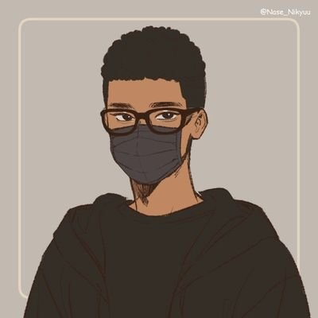

Stanley Chisom
Fullstack Web Developer
💌@stanley.chisom042@gmail.com
Tech Stack
Html, Css, Javascript, React
PHP, MySQL, Laravel, Wordpress
Postgres, MongoDB, MySQL
Work History
🚧 SENIOR DEVELOPER | FOI LABS
10/2017 - 10/2019
Designed and developed a laboratory management system. My system
provided an interface for lab technicians and customers to view and
track data from samples tested in the lab.
-
Designed prototype & pitched original idea for new lab management
system (LIMS)
-
Built entire code base and brought version 1 of LIMS system to
market as a solo developer
- Onboarded and trained customers (Webinars & Conferences)
-
Managed a small team of developers in expansion of LIMS system